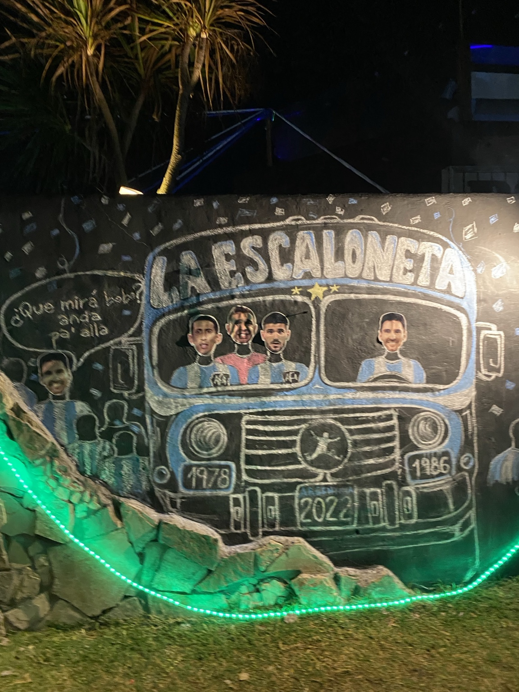

La Scaloneta

Este mural fue fotografiado en Santa Clara del Mar. Está realizado principalmente con tiza y representa a la Selección Argentina y a algunos de sus jugadores.
Es una intervención sencilla y temporal, pero muestra cómo el arte callejero también puede estar relacionado con momentos y símbolos populares de la cultura argentina.
Volver a la galería